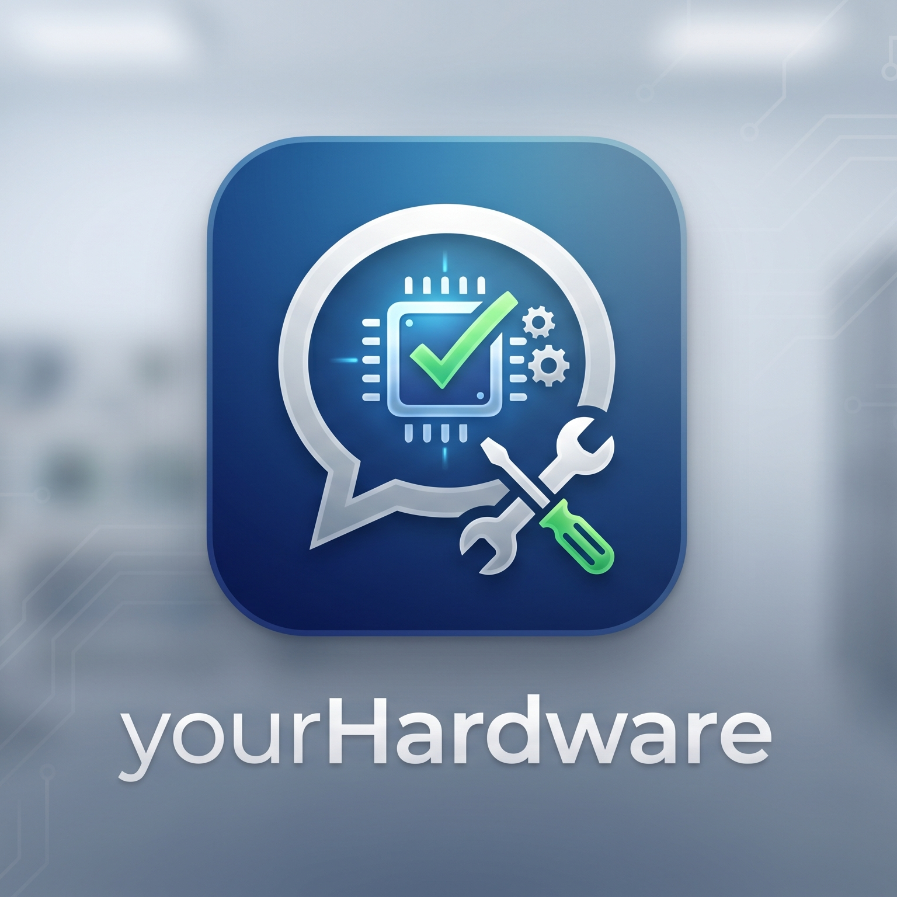

정확한 하드웨어 점검을 위해 현재 컴퓨터 사양이 필요합니다.
1. 키보드의 [Windows 키 + R]을 누르고 dxdiag를 입력 후 엔터를 쳐주세요.
2. 창이 뜨면 아래쪽의 [모든 정보 저장]을 눌러 텍스트 파일(.txt)로 저장해 주세요.
3. 저장된 텍스트 파일을 열어 내용을 전체 복사 (Ctrl+A → Ctrl+C)한 뒤, 오른쪽 AI 채팅창에 붙여넣기 (Ctrl+V) 해주시면 맞춤형 점검을 시작합니다.

1. 키보드의 [Windows 키 + R]을 누르고 dxdiag를 입력 후 엔터를 쳐주세요.
2. 창이 뜨면 아래쪽의 [모든 정보 저장]을 눌러 텍스트 파일(.txt)로 저장해 주세요.
3. 저장된 텍스트 파일을 열어 내용을 전체 복사 (Ctrl+A → Ctrl+C)한 뒤, 오른쪽 AI 채팅창에 붙여넣기 (Ctrl+V) 해주시면 맞춤형 점검을 시작합니다.